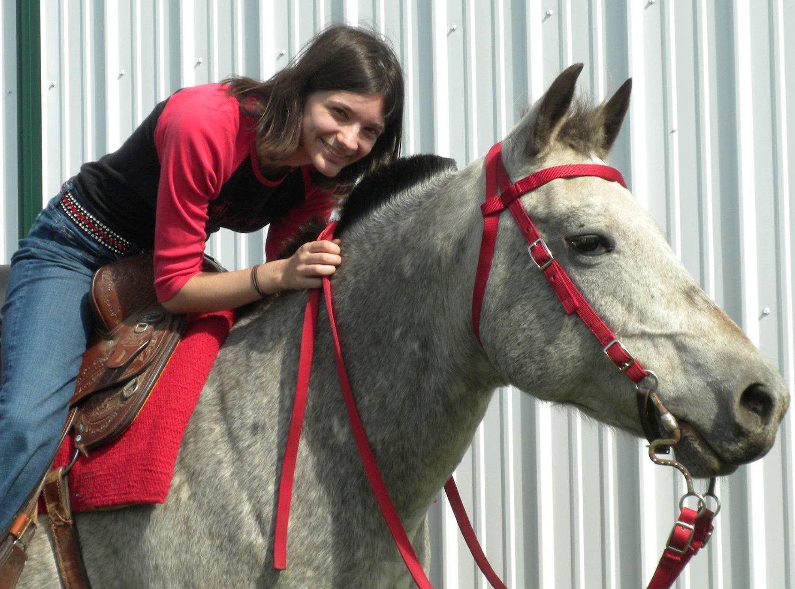

"Hello! I’m Rachel, a third-year computer science major from Michigan. I’ve been on advanced team since drill team was created, and I’m so glad I get to be captain of the intermediate team this year! But even better, I get to ride Blue again! I feel like if I introduce either myself or Blue I’ve kind of introduced both of us, since we’re a lot alike. We both love drill team, get randomly excited about nothing, can fall asleep anywhere, and are, as a rule, imprecise about everything. Obviously that last part has been something to work on in drill team, and we’ve had a blast. I’ve always loved drill because you get to work with other horse-crazy people who you otherwise might never have met. I can’t wait to ride with the drill team for the rest of my time at Grinnell!"
"Hi! My name is Abby and I’m a first-year student from Chicago, Illinois. I’m thinking about majoring in Political Science at Grinnell but I haven’t yet decided. I’ve been riding English since I was eight years old but drill team is the first time I’ve ridden Western. I joined drill team because I wanted to find a community of people who love horses the way I do. I ride Razz on the intermediate drill team and she’s been a very patient teacher while I learn about the differences between English and Western styles of riding and continue strengthening my legs."
"I’m Olivia, a second-year studying in the Vet Tech program at Des Moines Area Community College. I’m from Newton, Iowa and this is my first year on drill team. I ride Eclipse on the intermediate team and my favorite thing about Eclipse is that he is always so energetic and happy to be with other horses (even if other horses don’t want to be around him). He is super sweet and loves being with anyone he meets. Being on drill team is amazing because I get to meet new friends and do what I love at the same time. I haven’t been riding for that long but have always loved horses and love being able to ride with girls who have the same passion!"
"Hi, I’m Naomi! I am a first-year from Boise, Idaho. While I don’t know what I want to major in at Grinnell yet, I am really enjoying all my classes! This is my first year on drill team and I am riding Lexus with the intermediate team. In addition to getting a nice leg workout I am learning so much from her and becoming a better rider! I look forward to riding and spending time with my teammates every week. I never expected that I would be able to continue my love for riding once I attended college but drill team has made this possible for me. I look forward to the rest of our season and years to come on drill team."
"Hi, my name is Anna Emerson and I’m a second year at Grinnell College. I’m majoring in Political Science with an Environmental Studies Concentration. And I’m helping fill out the intermediate drill team this spring. And I’m so excited to be working with these wonderful ladies! They make drill team an awesome experience. I’m riding my pony Cupcake on both the intermediate and advanced drill team this semester. She’s a wonderfully sassy and adorable POA mare. She enjoys the challenge of drill—and so do I! "

"Hi, I’m Maggie, a third-year Biology major and Environmental Studies concentrator and I’m riding Cupcake to help fill out the intermediate team. Despite her small size, she’s full of
speed and always hungry for more food! I’m so grateful to be able to work with both teams this semester; it’s been awesome to see how far we’ve all come!"
Maggie was on intermediate and advanced team for fall 2016 through fall 2017, but she has decided to focus on advanced team for spring 2018. We'll all miss her!